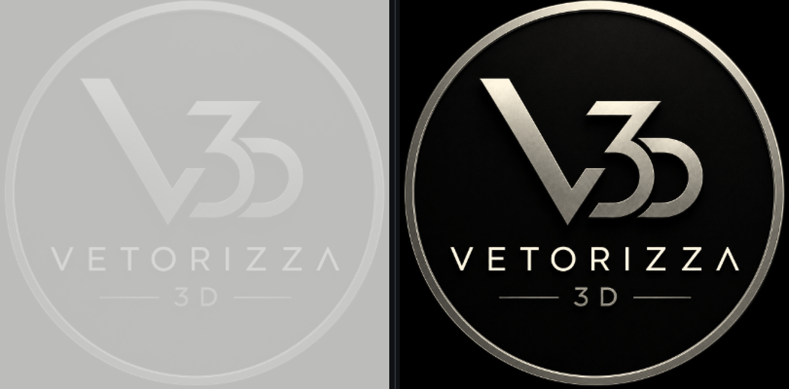
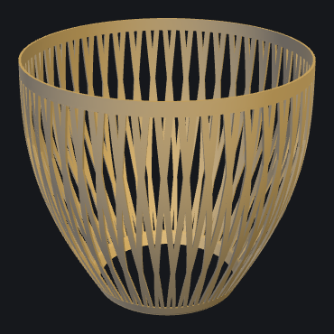
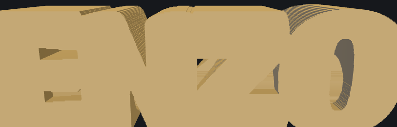

Retrato em Linhas
De perto são só linhas. Dá dois passos pra trás e a foto aparece. Um quadro que muda conforme você se aproxima.
Criar o meu
Foto Mágica
Apagada, parece uma placa branca. Acendeu a luz atrás, a foto aparece inteira. Vira quadro de mesa ou abajur.
Criar o meu
Vaso e Abajur
Vaso, cúpula de luminária e base, no tamanho que você quiser. A parede vazada desenha a luz na sala.
Criar o meu
Lápis com Nome
O nome da criança em letras gordas, encaixado no lápis. Ninguém mais troca o material na escola.
Criar o meu